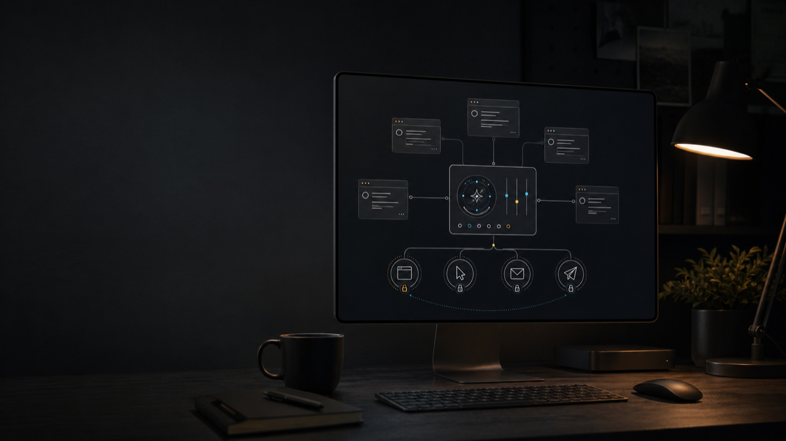

Flagship project
Codex Mission Control.
Local traffic control for Mac-side Codex work: projects become missions, shared surfaces get lanes, risky actions become exact approval packets, and the phone remote stays optional.
Missions.
Projects are discovered into a local hub without moving the real folders.
Lanes.
Browser, GitHub, email, desktop, public social, commerce, and global writes stop colliding.
Approval packets.
Public, account, payment, outreach, and risky work turns into exact go/no-go packets.
Why this is the flagship
It turns many AI chats into one controlled local operation.
Codex Mission Control is the product center because it solves the real problem behind the rest of the portfolio: multiple capable agents are useful only when shared surfaces, handoffs, and approval gates are explicit.
- local hub at
~/Codex Mission Control - mission outboxes and dashboard
- surface locks with stale-lock detection
- optional Telegram relay for phone control
Receipts
Proof surfaces are part of the product.

Supporting systems
One operator stack, several sharp tools.
Self-serve browser-agent lane boards, public-action gates, proof ledgers, and handoff templates for people running agents near real surfaces.
ClawdeckLocal-model mode for OpenClaw/Codex workspaces, with Ollama defaults, smoke tests, and explicit cloud/local boundaries.
TaskProofBrowser task specs into screenshots, DOM, console/network evidence, rerun scripts, and static proof reports.
Boundary AtlasLocal architecture radar for TS/JS imports, cycles, deep imports, boundaries, dead exports, and drift.
Counterexample StudioProperty-test failures with deterministic seeds, minimal witnesses, shrink traces, and exact rerun commands.
Mentor-worker benchmarkLocal benchmark for mentor/worker LLM collaboration on deterministic Python repair tasks scored by pytest.
CHATTY RevivalPublic transparency experiment with explicit no-wallet, no-spend, no-fake-engagement, and no-investment-claim rules.
No-call written audits
For builders who already have a messy agent workflow.
Send redacted repo links, screenshots, logs, reports, or a short workflow brief. I map the failure mode, proof gap, buyer surface, and next fix sequence in writing. No secrets, live credentials, private customer data, wallet movement, or call.
Builder profile
Local-first, evidence-first, AI-assisted.
I am a Florida Tech CS student building tools that make AI work more operationally honest: bounded scope, visible state, explicit controls, runnable demos, and proof artifacts people can inspect.
Profile READMEAI-assisted, clearly labeled.
The signal is judgment: choosing bounded ideas, validating behavior, and packaging the result.
Local-first when possible.
Repos should run on a Mac without unnecessary hosted infrastructure, paid services, or hidden accounts.
Proof over promises.
Screenshots, demos, tests, reports, audits, and install commands carry more weight than broad claims.